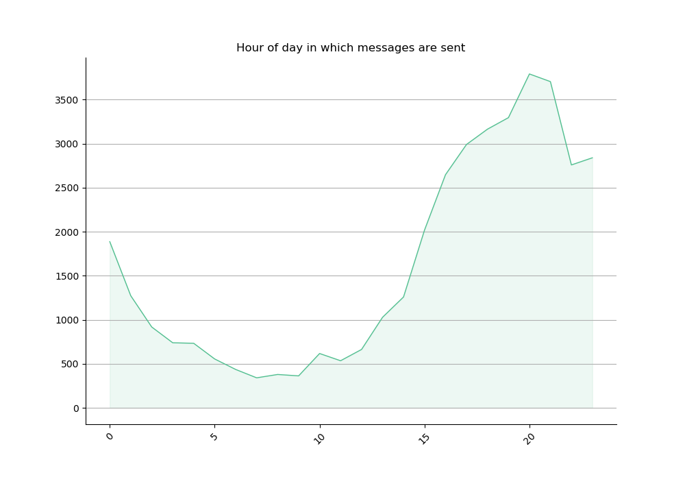

Geeky Love!
Happy Anniversary!
I hope that this is not too much, but if I have the means, why not just do it? I prepared a brief analysis on our WhatsApp conversations through our history together. I found some interesting things about us, I hope you like it :)
The Data
I analyzed all the WhatsApp messages we have sent from 13.07.2017 to 21.02.2019. They include a lot of cheesy notes, good morning messages and lots of love. Some interesting facts:
- In total, we have sent 38,996 messages (up to the date of the analysis, of course)
- We have said the word "honey" XXXX times
- We have said the word "amo" XXX times
- On average, we send XXXX messages every day
- The day of the week that we send on average the most messages
- The day we sent the most messages is XXXX
- The day we sent the least messages is XXXX
I wanted to know more about our messaging habits, so I first wanted to see how many messages we have sent to each other:

It seems that my drunken messages have gone too far :D But really, after we started talking more than 1 year ago, we haven't stopped!
About the Dates
The first thing I want to see to begin the analysis is the big picture. I think that data separated each months gives a nice insight:

The month that we have sent more messages was January 2018, and the one that had the least messages was November 2017 (This is my fault, I'm really REALLY sorry for that)
This next plot is a bit messy, because it has the number of all our messages every day:

We can see that we have had busy conversations, always with something interesting to talk about :) Here are some other intersting facts about our daily messaging routine:
- On average, we send 70.02 messages every day
- The day of the week that we send on average the most messages
- The day we sent the most messages is 27.04.2018, with 257 notes!
- There are 12 days that we have talked the least, with only 1 message:
- 11.11.2017
- 13.03.2018
- 15.11.2017
- 16.11.2017
- 16.08.2018
- 18.11.2017
- 19.03.2018
- 29.12.2018
- 03.10.2018
- 30.12.2018
- 06.11.2017
- 09.11.2017
Now, I want to see if there is a pattern on which day of the week we message the most:

Apparently, Tuesdays and Wednesdays are our busiest and least busy days.
Finally, at what time do we like to message the most?
I'm not really sure if this graph is correct, but I think it is all in German time, to that explains the messages at 5h, but I have to double check my code.
About the Words we use
Antoher iteresting thing that I analyzed are the words that we used the most. Without the stop-words, these are the most common words that we use:

There are a couple or remarks I want to make here. First of all, even if the words "I" and "you" are stop-word, I didn't delete them because I think that they convey a nice meaning. We talk about what happens in our daily life, and we are very interested in hearing what the other has to say. Next comes the smiley ":)", we wish good on the other a lot. Next is the media. Between images and good-night messages, we have sent in 1876 files between us. It is not a misunderstanding that I love hearing your voice, and maybe you like mine too.
Other honorable mentions are "honey", "home", "sleep", ":/", "wish", "miss", "te", "bed", "best", "everything", "amo", "thinking", "night", and ":0" which I think we really use a lot (except maybe the last one).
I made this to emphasize that communication ahs always been present in our relationship. I appreciate every little message that you send me. You are a very important part of my life, and even though we rely oon WhatsApp to easily communicate every day, I promise that in the future we will not use it as much, because we will be much much closer.
Te amo corazón